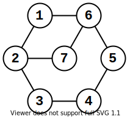
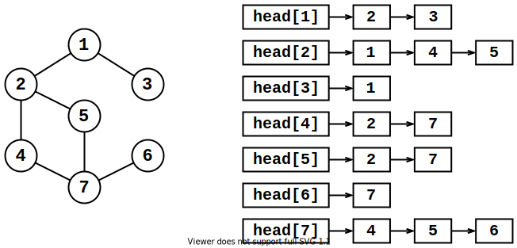

图
 Mar 17, 2021
Mar 17, 2021
 Menu
Menu
定义 ¶
图（Graph） 由若干 顶点 和 边 组成，用大写字母 $G$ 表示，$V$ 为顶点集合，$E$ 为边集合，记作 $G=(V,E)$.

图是描述实际问题的工具.如进行城市道规划时，可将每个城市视作顶点，连接城市的道路视作边.
边的方向 ¶
- 图的每条边都有起点和终点，则图为 有向图；
- 相反，边没有方向（可以理解为双向）的图为 无向图（双向图）.

边权和点权 ¶
为解决实际问题，引入 边权 和 点权 的概念：
- 边权 及边的长度.解决最短路径问题时，将城市视作顶点，城市之间的道路长度视作边权；
- 点权 即点的大小.解决最小收费问题时，将收费站视作顶点，收费站之间的道路视作边，通过收费站支付的费用视作点权.
度数 ¶
若图中有 $d$ 条边与节点 $i$ 相连，则节点 $i$ 的 度数 为 $d$（即节点的 连边 个数）.如下图，节点 $1$ 的度为 $6$：

- 若有向图中有 $d$ 条边的 终点 是节点 $i$，则节点 $i$ 的 入度 为 $d$（即节点的 入边 个数）；
- 若有向图中有 $d$ 条边的 起点 是节点 $i$，则节点 $i$ 的 出度 为 $d$（即节点的 出边 个数）；
子图 ¶
图 $G$ 的子图 $H$ 满足以下条件：
- $G$ 中包含 $H$ 的所有节点和边；
- $G$ 和 $H$ 同时为无向图或有向图.
即 $G=(V,E),H=(V',E'),V'\in V,E'\in E$.如下图，$H$ 是 $G$ 的子图：

路径和连通 ¶
从节点 $i$ 走到节点 $j$，经过的边的序列为 $i$ 到 $j$ 的 路径.路径的长度为经过边的边权和.
如下图，节点 $1$ 到 $6$ 的一条路径为 $1-4-5-6$.

若两个节点之间存在路径，则称它们 连通.
回路（环） ¶
若图中存在起点和终点相同的路径，则此路径称作 回路（环）.
完全图和连通图 ¶
-
若无向图 $G$ 的任意两个节点之间都有连边，则 $G$ 称为 完全图.
$n$ 个节点的完全图有 $\su\frac{1}{2}n(n-1)$ 条边；
-
若无向图 $G$ 的任意两个节点都连通，则 $G$ 称为 连通图.
$n$ 个节点的连通图至少有 $n-1$ 条边.
强连通分量 ¶
- 若有向图 $G$ 的任意两个节点都连通，则 $G$ 称为 强连通图；
- 若有向图 $G$ 的子图 $H$ 是强连通图，则 $H$ 称为 $G$ 的 强连通分量.
图的存储 ¶
直接存边 ¶
把每条边的起点、终点、长度存入数组中.
const int N = 1e6;
struct node {
int from, to, len;
} edge[N];
const int N = 1e6;
int from[N], to[N], len[N];
邻接矩阵 ¶
用二维数组 $g$（邻接矩阵）存储边长，$g[i,j]$ 表示边 $i→j$ 的权值.缺点是不能存储重边、浪费空间.
const int N = 1e6;
int g[N][N];
邻接表 ¶
把节点 $i$ 的所有相邻节点插入以 $head[i]$ 开头的链表中.

int top, head[];
struct Node {
int val, len, next; // 这里只需要用到单向链表
} edge[];
void insert(int u, int v, int len) { // 追加一条从 u 到 v，长度为 len 的边
edge[++ top] = Node{v, len, head[u]};
head[u] = top;
}
int path(int u, int v) { // 获取以 u, v 为端点的边的长度（没有边则返回 -1）
for(int p = head[u]; p; p = edge[p].next)
if(edge[p].val == v) return edge[p].len;
return -1;
}